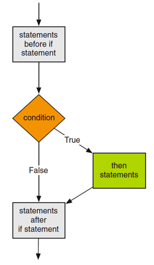
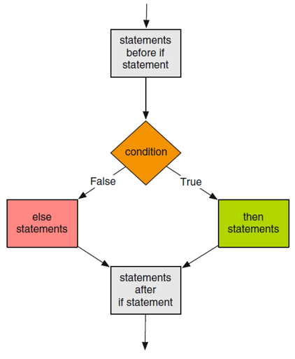
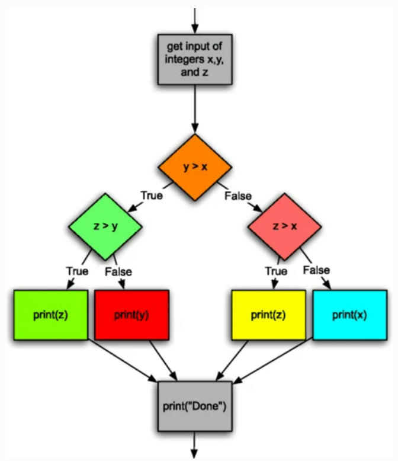

Conditional statements
- Input validation
- Making choices or decisions
- Comparison operators
- Making a choice with the if statement
ifstatement syntax- Exercise: roots of a quadratic polynomial
- Ternary operator
- Problem: maximum of three values
- Nested if statements
- Choosing from a list of alternatives
- Exercise: Club access eligibility
- Compound Boolean expressions
- Maximum of three values with compound conditions and elif
- Short circuit logic
- Non-Boolean expressions as conditions
- Comparison of floating point expressions
Input validation
-
Usually an algorithm works on some specific input type and range of values
-
If the prompt is not specific enough or the user is careless or malicious, his/her input may be of the wrong type or in the wrong range of values
-
The output then would be wrong or the program can error-out
-
Input validation is testing whether the input is in the right format and range
- important part of a program to avoid malfunction
-
Based on input validity test , the program decides or chooses to solve the program or handle the wrong input
Making choices or decisions
-
Making choices is essential for more than just validating input
-
Many algorithms require making decisions or executing steps based on the verification of some condition
-
Most of the time, conditions are Boolean expressions involving variables which value is only known at execution time
-
A Boolean expression evaluates to True or False E.g. comparison expressions
Comparison operators

-
In the statement
A = True, the variable A has a Boolean type -
The expression,
userEntry > 14evaluates to a Boolean. it is printed as:-
True, if
userEntryis greater than 14 -
False, if
userEntryis less or equal to 14
-
-
In the statement,
B = (userEntry % 7) == 0, the variable B also has a Boolean type, outcome of a comparison expression -
B is True, if
userEntryis a multiple of 7. -
B is false if
userEntryis not a multiple of 7
Making a choice with the if statement
- An if construct evaluates a condition (Boolean variable or expression) and allows to specify a set of statements to be executed when the condition evaluates to True.

- An optional companion
elseconstruct specifies another set of statements to be executed when it evaluates to False

if statement syntax
<statements before if statement>
if <condition >:
<then statements >
<statements after if statement >
- Here,
<then statements>are executed if the condition isTrueand skipped if it isFalse
Besides, <then statements> must be indented
<statements before if statement >
if <condition >:
<then statements >
else:
<else statements >
<statements after if statement >
-
Here,
<then statements>are executed if the condition isTrueand the<else statements>are executed if it isFalse -
Besides,
<then statements>and<else statements>must be indented
Examples
Exercise: roots of a quadratic polynomial
Write a program which
- prompts the user for the coefficients of a quadratic equation
- computes and prints its real roots, if they exist. If real roots don’t exist print a message.
If we denote by
- a : the coefficient of the quadratic term
- b : the coefficient of the linear term
- c : the coefficient of constant term
Then, the roots are computed as: \(x_1 = \frac{-b-\sqrt{b^2-4ac}}{2a}\) and \(x_2=\frac{-b+\sqrt{b^2-4ac}}{2a}\)
Real roots exist if the discriminant $b^2-4ac$ is greater or equal to 0.
- Note: the case where discriminant is equal to 0 will simply result in the same value for both roots, and should not be treated differently.
Ternary operator
When there is only one expression to select on a True condition or a False condition, it is possible to express the same logic of the if statement using the ternary operator
<statements before conditional statement >
<then statement> if <condition> else <else statement>
<statements after conditional statement >
Problem: maximum of three values
Consider a program which
-
prompts the user for three integer values x, y, and z
-
finds and prints the maximum out of the three values
Solving this problem requires a logic that cannot be expressed with a single if statement and a single simple comparison, since two conditions have to be verified.
Nested if statements
-
The simplistic approach to solve the “maximum of three” problem is to use nested
ifstatements -
Many times nested
ifstatements are inherent of the algorithm and cannot be avoided -
Many other times it is possible to avoid nested statements algorithmically or/and syntactically (like in this max of three example)

Let’s start with nested if statements conditions
Choosing from a list of alternatives
Consider a program which:
-
prompts the user for two numeric operands and an operation symbol
-
prints the operation and its result
The program reads the operation symbol as a string then determines the expression to be evaluated based on the value of that symbol string.
Assuming that the program allows only the basic operations +, -, * and /, the program has to compare the input symbol, potentially, against all these symbols.
With nested if statements
With elif construct
Exercise: Club access eligibility
Write a program that checks if a person is eligible to enter a club based on her age. The person has to be between 15 and 18 years old (bounds included) to be eligible. The program
-
prompts the user for the age
-
prints either “eligible” or “not eligible”
Note: use simple comparison expressions and the if-elif-else constructs.
Compound Boolean expressions
-
A Boolean expression is an expression that evaluates to a Boolean and has a Boolean type
-
The simplest Boolean expressions are comparison expressions
-
Any Boolean expression can be combined with another using the logical operators
and,orandnot. -
De Morgan’s law:
-
not (A and B) = (not A) or (not B) -
not (A or B) = (not A) and (not B)
-
Solution to Club Eligibility with compound conditions
Maximum of three values with compound conditions and elif
Solution
Short circuit logic
The second operand of a Boolean expression is not evaluated if:
-
the operation is
andand the first operand evaluates toFalse: the result is inevitablyFalse -
the operation is
orand the first operand evaluates toTrue: the result is inevitablyTrue
Non-Boolean expressions as conditions
-
If a variable or expression of non-Boolean type is used as a conditional expression, it is expended to a Boolean expression that compares against the null value of the type: 0 for
int, 0.0 forfloatand empty string forstring -
However, operands for
andandoroperators must not be non-Boolean;- logical operators always return one of their operands and always use short-circuit logic
- syntactically, the expressions will be correct but may give a result different from what beginner programmers would have intended
Comparison of floating point expressions
-
Exact comparisons of floating point values sometimes turn out wrong due to precision loss during assignment or arithmetic operations
-
Comparisons of floating point expressions should be done within a certain margin